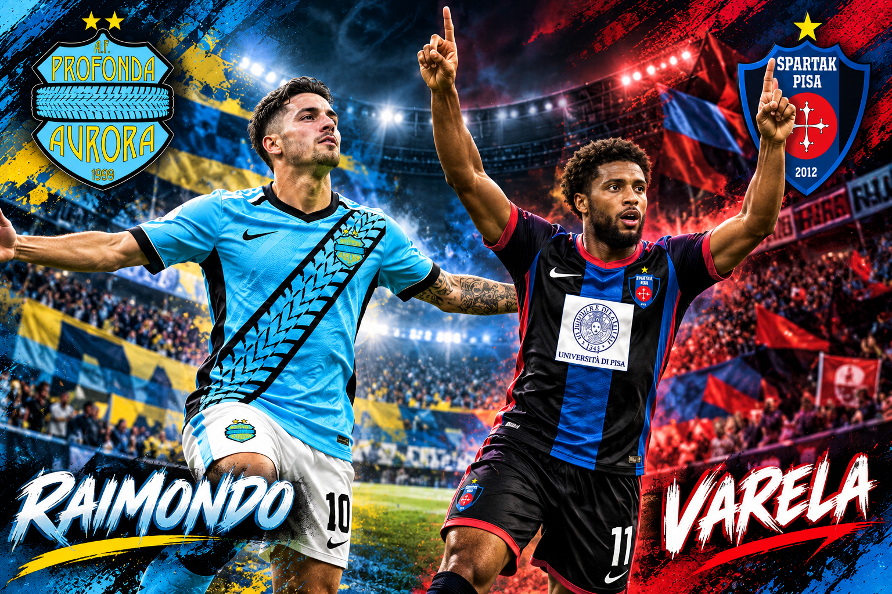

Raimondo e Varela, i volti della settimana
Due protagonisti, due maglie, due storie: la Profonda Aurora continua la sua corsa in Serie Maxima, mentre lo Spartak Pisa conquista la terza vittoria consecutiva nel proprio girone.

E se ne va.. e se ne va… la capolista se ne va!! Questo il coro dei Martelli Pneumatici, gruppo ultras di fede profondina, che al termine della 5° giornata hanno visto la loro squadra prevalere ancora una volta su tutte le rivali. La Vaientus prova a rimanere agganciata agli acerrimi rivali, ma deve cedere ancora 8 punti. Riesce però ad allungare sull’Intertor che sta crescendo giornata dopo giornata facendo sognare i propri tifosi in un possibile inserimento nella corsa al titolo sfuggito la scorsa stagione dopo un filotto di 4 vittorie. Tiene un buon passo anche la Dinamo, che sale al quarto posto, mentre ne guadagna due lo Spartak ora quinto, a discapito di Real Doratom e Monaco che scivolano al 6° e 7°posto. Perdono posizioni anche Evertor e Taurinorum, superate dal Lobe, ora ottavo. Più dietro rimane tutto invariato, con Wild, Tomcat e Zuluzebra che allungano sul Castel adesso ultimo e dietro di 11 punti dai bianco-neri zebrati.